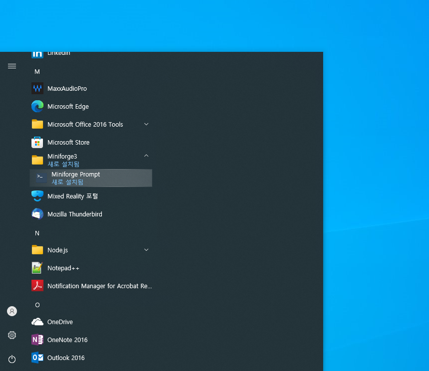

환경 구축 2 : 파이썬 패키지 설치
환경 구축 2 : 파이썬 패키지 설치
본 글에서는 CHECK-API를 활용하기 위해 필요한 파이썬 패키지를 설치하는 법을 설명합니다.
준비사항
여기에서는 컴퓨터에 이미 Mambaforge 기반의 파이썬 배포판이 설치되어 있다고 가정합니다.
만약 파이썬 배포판이 설치되어 있지 않은 경우에는 다음 블로그 글을 참고하여 설치해 주세요.
또한 이 글에서 설명하는 설치 명령을 사용하려면 윈도우 실행 메뉴에서 “Miniforge3” > “Miniforge Prompt” 메뉴를 선택하여 Miniforge 프롬프트를 시작해야 합니다.

추천 파이썬 패키지 목록
CHECK-API를 활용하는데 도움이 되는 중요 파이썬 패키지에는 다음과 같은 것들이 있습니다. 이 목록은 일부일 뿐이며 사용하고자 하는 목적에 따라 이외에도 다양한 패키지를 추가해야 할 수 있습니다.
- numpy: 수치해석
- pandas: 데이터 분석
- jupyterlab: 노트북 형식의 코드 개발
- statsmodels: 통계분석
- tensorflow: 머신러닝
- torch: 머신러닝
- requests: CHECK-API 호출
- python-dateutil: 날짜 처리
- matplotlib: 시각화
- seaborn: 통계 시각화
- plotly: 인터랙티브 시각화
- dash: 대시보드 제작
- flask: 대시보드를 위한 웹서버
추천 패키지의 전체 목록은 다음 링크에 있는 requirements.txt 파일에 정리되어 있습니다.
pip 명령을 사용한 패키지 설치
파이썬에서 패키지를 설치할 때는 명령 프롬프트 또는 터미널 창에서 다음과 같은 형식으로 pip 명령을 사용합니다.
예를 들어 numpy 패키지와 pandas 패키지를 설치하려면 다음과 같은 명령을 사용합니다.
ssl 인증서 오류가 발생하는 경우
회사에서 pip 명령을 사용하는 경우 방화벽이나 프록시 설정으로 인해 다음과 같은 오류가 발생할 수 있습니다.
SSLError(SSLCertVerificationError(1, '[SSL: CERTIFICATE_VERIFY_FAILED certificate verify failed: unable to get local issuer certificate'))'이러한 오류는 두 가지 방법 중 하나로 해결할 수 있습니다.
1. --trusted-host 옵션 사용
pip 명령을 실행할 때마다 다음과 같이 --trusted-host 옵션을 추가합니다.
만약 기본 패키지 레포지토리인 pypi.org, files.pythonhosted.org 이외의 레포지토리를 이용하는 경우에는 해다아는 레포지토리에 대한 옵션을 추가하면 됩니다. 예를 들어 pytorch 패키지 레포지토리 주소는 download.pytorch.org이므로 pytorch 패키지는 다음과 같이 설치할 수 있습니다.
2. pip.ini 파일 사용
pip 명령을 실행할 때마다 --trusted-host 옵션을 사용하기 귀찮은 경우에는 사용자 홈 디렉토리 아래에 pip라는 이름의 디렉토리를 만들고 다음과 같은 pip.ini 파일을 만들어 주면 pip 명령 실행시 --trusted-host 옵션을 추가하지 않아도 자동으로 적용됩니다.
pip.ini 파일은 다음 링크에서 다운로드 받을 수 있습니다.
pip 명령을 사용한 다수의 패키지 동시 설치
설치하려는 패키지가 많은 경우에는 패키지 목록을 정리한 requirements.txt 파일을 pip 명령의 인수로 사용할 수 있습니다.
위에서 추천하는 모든 패키지를 한꺼번에 설치하기 위해서는 위 링크에서 requirements.txt 파일을 다운로드 받아 프롬프트 창이 위치한 디렉토리에 복사한 후 pip -r requirements.txt 명령을 사용하면 됩니다.
위 링크에서 제공하는 패키지는 140개 이상으로 설치에 10분 이상의 오랜 시간이 걸릴 수 있습니다.
설치된 패키지의 확인
pip list 명령을 실행하면 설치된 패키지의 목록을 확인할 수 있습니다.
패키지 삭제
패키지를 삭제하고자 하는 경우에는 다음과 같이 pip uninstall 명령을 사용할 수 있습니다.